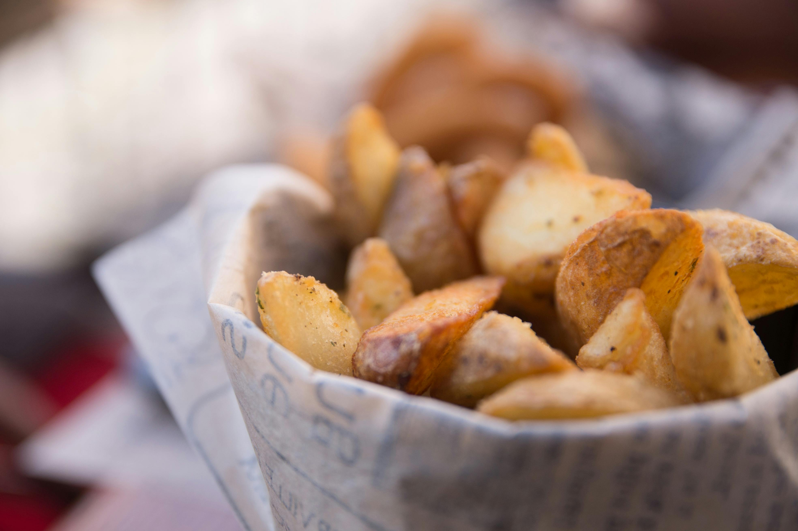
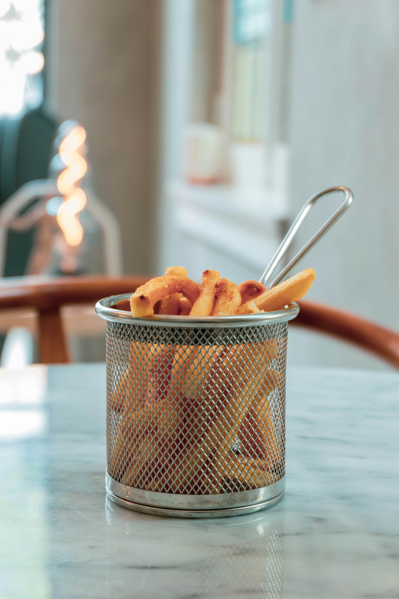
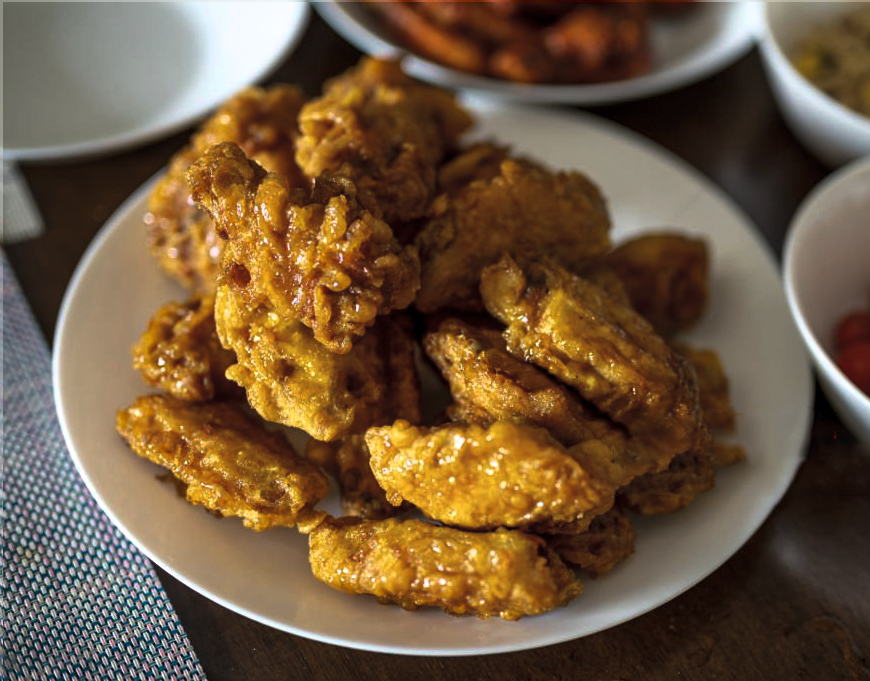
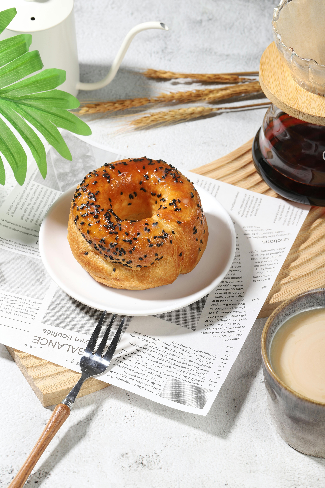

The famous Gary's Big Bucket of Chicken, a mouth-watering feast that stands as the peerless pinnacle of perfected poultry. What sets Gary Blue's fried chicken apart is its secret blend of 94 herbs and spices which Gary developed during decades of combat tours in various conflicts around the world. Each bite of this crispy golden goodness is a symphony of flavors.
Price: $25.00
The Big Gary
The renowned and revered Big Gary, our iconic deluxe chicken burger. Featuring two succulent white meat chicken patties made from the founder's patented 94 herbs and spices formula, this burger is a culinary masterpiece. It's a taste sensation you won't find anywhere else.
Savor the deliciousness of our chicken sandwich, boasting tender, flavorful chicken nestled in a soft bun, perfectly complemented by fresh toppings and savory sauces.
Price: $8.00
Gary Blue's Renown Taters

Indulge in Gary Blue's delectable Taters, where crispy potato wedges are seasoned to perfection. These golden delights offer a satisfying crunch with each bite, revealing fluffy, tender insides. Whether enjoyed as a side or a standalone snack, our taters promise a flavorful and satisfying culinary experience at every visit.
Price: $4.50
Gary Blue's Fries

Savor the delicious Fries at Gary Blue's restaurant, where each golden fry is cooked to crispy perfection. Seasoned with just the right blend of spices, they offer a satisfying crunch with every bite. Whether enjoyed as a side or a snack, our fries are sure to satisfy your cravings for a classic experience.
Price: $4.00
Gary's Renowned Wings

Savor the deluxe Wings at Gary Blue's, where flavor takes flight. Our tender, juicy wings are coated in your choice of tantalizing sauces, from Classic BBQ to Fiery Buffalo. Each bite is a burst of savory goodness, perfectly complemented by a side of crisp celery and creamy ranch or blue cheese dressing. It's wing perfection, only at Gary Blue's.
Price: $10.50
Gary's Renowned Soup
At Gary Blue's, our Soups are a culinary delight crafted with precision and care. Each spoonful offers a burst of flavor, made from the freshest ingredients and simmered to perfection. With our meticulous attention to detail, you can expect the emulsion of the soup to never split at our establishment, ensuring a consistently velvety texture that tantalizes the taste buds. From hearty classics to inventive creations, our soups are sure to warm your soul and leave you craving more.
Price: $7.50
Gary Blue's Salad
Delight in the diverse assortment of salads at Gary Blue's restaurant, where freshness meets flavor. From vibrant garden salads bursting with crisp veggies to Hearty Caesar Salads topped with savory grilled chicken, each creation is a symphony of taste and texture. With options to suit every palate, our salads are the perfect balance of wholesome and delicious.
Price: $5.00
Gary's Pancakes
At Gary Blue's, our Pancakes are a breakfast sensation that delights with every bite. Made from a secret recipe perfected over years, these fluffy discs of golden goodness are cooked to perfection on the griddle. Served with a side of warm maple syrup and a dollop of whipped butter, each pancake is a symphony of flavors and textures that will leave you craving more. Join us and experience pancake perfection at Gary Blue's restaurant.
Price: $6.50
Gary Blue's Bagels

Gary Blue's restaurant offers a delectable selection of Bagels that cater to every taste preference. Choose from a wide variety of flavors, including classic plain, savory everything, tangy sourdough, aromatic cinnamon, and more. Each bagel is handcrafted to perfection, boasting a chewy interior and a crisp crust. Whether enjoyed on its own or with a spread of cream cheese or smoked salmon, our bagels are sure to satisfy your cravings.